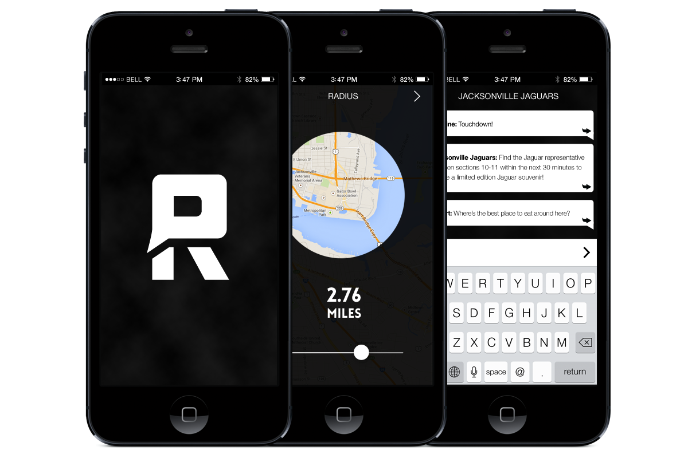

Rumble
Location Based Chat App (Student Project)
Rumble is a geo-locational chat app, which is ideal for large conferences and sporting events. After signing in and setting the radius of your search, you are able to select a feed to chat in or create you own. The concept is based on the fact that thunder can be heard only within the radius of a certain location.
